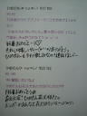

| 2012/08 17 Fri | ひめたん(* ゝω・*)ノ その192 |

昨日の乃木坂浪漫、見てくださったかな(^^)？
浴衣・観覧車・水族館なんて素敵すぎるしょー
撮影中はテンション上がってばっかでした！
エピソードを挙げるなら...
・浴衣はピンクと黄色でめちゃ悩んだ結果
普段は着ないような黄色をあえてチョイスしてみたのですが、
オンエア見てみたら黄色の浴衣が映えててよかったなって思った
・まぶしかった(>_<)
とにかくまぶしくて、顔が強ばってるんじゃないか不安だった
そして暑かったー
・観覧車の中は冷房がきいてて快適だった
こんな感じかな(*^^*)
昨日今日は
ろってぃー
(川村真洋chan)と２人で
大阪・奈良・和歌山を巡ってＰＲしてますよー
＊大阪＊
都会ね！
街中いろんなとこから聞こえる関西弁に
いちいちきゅんきゅんしてました(//ω//)
ネギ焼き美味しかったのよ。
生地薄くてネギたっぷりだからヘルシーな味だった！
大阪人は「お好み焼き定食」ゆーて
お好み焼きと白いごはん食べたりするんですってねーあめいじんぐ。
＊奈良＊
奈良駅にせんとくんおった(*^^*)
収録する所の周りにはとっても静かで落ち着いた雰囲気のおうちが並んでた。
おうちの前に「身代わり申」ってお人形さんがぶらさがってるんだけど
本当にかわいいのね＊
本気で買って帰ろうと思った。忘れてたけど...
＊和歌山＊
自然のきれいさにとりあえず驚きましたーね
川はきらきらしてて、緑も鮮やかだったのよ
広島とどこか似てるような気がして懐かしくなりましたね＊
ひめたん人生初☆和歌山上陸いえあ＼(^O^)／
ぶどう美味しかったよ！
各ラジオ局さんテレビ局さん、めちゃ歓迎して下さって嬉しかったです
ありがとうございましたっ
明日は島根にいきますよー∩^ω^∩＊
短いけど近況報告でした☆
(*´・ω・*)ひめたん

コメント(156)
2012/08/17 00:30